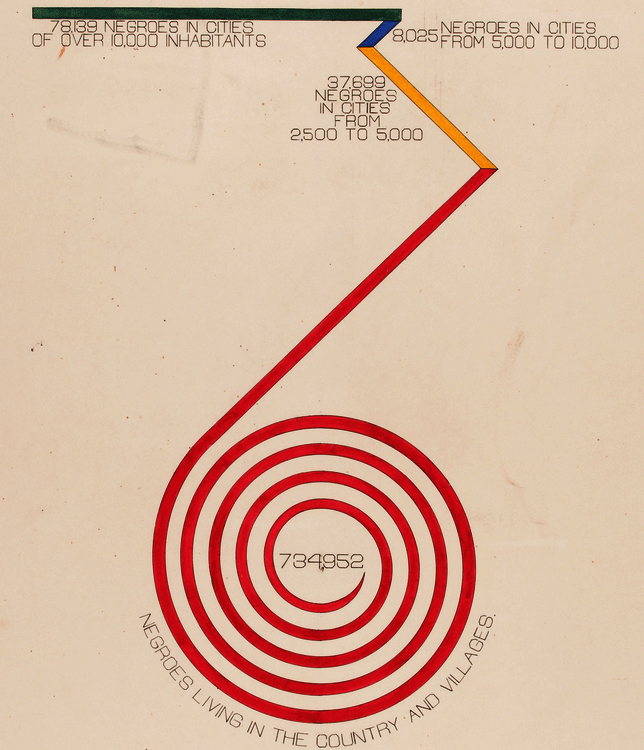
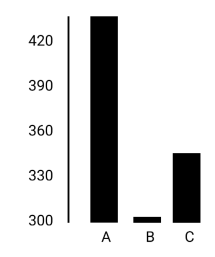
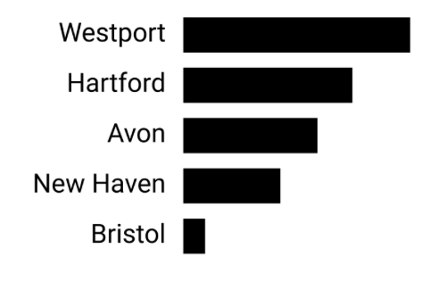
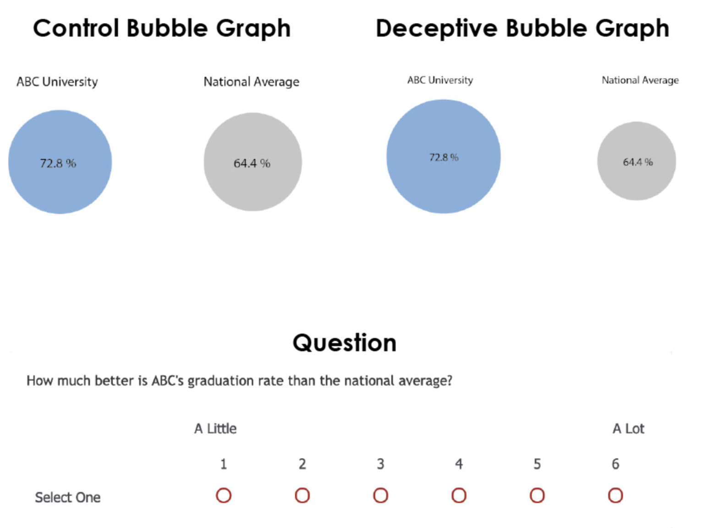

Visualizing Innovation
Visualization
March 20, 2023
Pioneers of data visualization
John Snow (1813-1858)


W.E.B. Du Bois (1868-1963)


Otto Neurath (1882-1945)

Five guidelines for better visualization
1. Choose the adequate type of graph
Bad:
Good:
── Attaching core tidyverse packages ──────────────────────── tidyverse 2.0.0 ──
✔ dplyr 1.1.2 ✔ readr 2.1.4
✔ forcats 1.0.0 ✔ stringr 1.5.0
✔ ggplot2 3.4.3 ✔ tibble 3.2.1
✔ lubridate 1.9.2 ✔ tidyr 1.3.0
✔ purrr 1.0.2
── Conflicts ────────────────────────────────────────── tidyverse_conflicts() ──
✖ dplyr::filter() masks stats::filter()
✖ dplyr::lag() masks stats::lag()
ℹ Use the conflicted package (<http://conflicted.r-lib.org/>) to force all conflicts to become errors
Good:

- Choose a chart type with respect to your data (numeric, categorical, ranking, time series etc.)
- What would you like to show: comparison, distribution, composition, relationship?
- To help you find the adequate type from a myriad of alternatives, you can also take a look at https://www.data-to-viz.com and https://datavizproject.com
2. Visualize data accurately and faithfully
Bad: 
Good: 
- Prioritize data accuracy, clarity, and integrity
- Avoid misleading the reader by truncating the y-axis, using two different y-axis, cherry-picking data, not providing context, etc.
- A good story based on data visualization does not involve deceptive manipulation of the data!
Example


Another example

A third example


3. Integrate graphics and text
Bad: 
Good: 
- Don’t make people turn their head to read labels
- Think about a logical order of the chart (alphabetical, values)
- Add direct labels rather than a legend
- Choose a meaningful title that focuses on your message
Best practice


4. Reduce the clutter
Bad: 
Good: 
- Unnecessary visual elements distract the readers from the central data
- Avoid elements that do not contain information!
- Basic elements like heavy tick marks or gridlines should be removed
- Think carefully which visual elements are really needed to read the chart
Best practice


Deceptive graphs


Misleading titles

The Gestalt Principles
What are the Gestalt Principles?
Gestalt Principles describe how humans group similar elements, recognize patterns and simplify complex images. “Gestalt” is German for “unified whole”.

The question is how humans typically gain meaningful perceptions from the chaotic stimuli around them. The idea is that the mind “informs” what the eye sees by perceiving a series of individual elements as a whole.
Which chart is random and which has structure in it?


Our brains look for structure

Let’s start with {ggplot}
Labels
data |> ggplot(aes(x = bill_length_mm,
y = bill_depth_mm,
color = species)) +
geom_point(size = 1.5, alpha = 0.5) +
scale_color_manual(values = MetBrewer::met.brewer("Lakota")) +
scale_x_continuous(limits = c(30,60), breaks = seq(30,60,10)) +
scale_y_continuous(limits = c(12,21), breaks = seq(12,21,3)) +
labs(x = "Bill length (in mm)", y = "Bill depth (in mm)",
title = "Penguins are awesome",
subtitle = "Depth and length of bills") +
theme_minimal()Warning: Removed 8 rows containing missing values (`geom_point()`).
Bibliography
Dougherty, Jack/Ilyankou, Ilya (2021). Hands-on data visualization: Interactive storytelling from spreadsheets to code. O’Reilly Media.
Healy, Kieran (2018). Data visualization: A practical introduction. Princeton University Press.
Lauer, Claire/OBrien, Shaun (2020). How people are influenced by deceptive tactics in everyday charts and graphs. IEEE Transactions on Professional Communication, 63(4), 327–340. DOI: 10.1109/tpc.2020.3032053
Scherer, Cédric (2022). Graphic design with ggplot2. https://rstudio-conf-2022.github.io/ggplot2-graphic-design/
Schwabish, Jonathan A. (2014). An economist’s guide to visualizing data. Journal of Economic Perspectives, 28(1), 209–234. DOI: 10.1257/jep.28.1.209